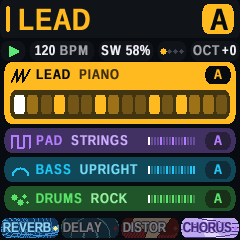
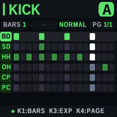
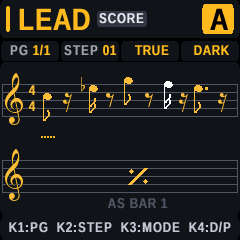
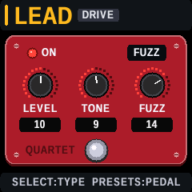
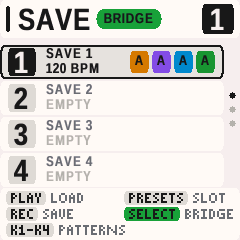
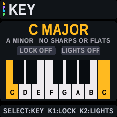

Four instruments.
One little band.
QUARTET turns the FM-1 into a four-track groovebox: lead, pads and chords, bass and drums. Ten sounds and ten patterns for each, four pedal slots with a library of 36 stompboxes, a sound editor, an arpeggiator, live recording, a score view and a song arranger.
Download How to install SourcePress PLAY as soon as it starts: a short demo groove is loaded in pattern A of each instrument. To start from empty, hold REC on the home screen until CLEAR ALL? appears, then press REC again within three seconds.

The home screen: one row per instrument, the step playing in white.
In short
Pick an instrument, pick a sound, write a pattern, add pedals, then chain patterns into a song. Everything lives on the FM-1's own buttons and knobs.
- ALGORITHM picks the instrument, SELECT its sound, PRESETS its pattern (A–J), a click each.
- SEQ opens the step recorder; press it again for live recording. HOME always comes back.
- REC on the home screen shows the pattern as sheet music.
- FX SEL ENV LFO are pedal slots, each holding any of 36 pedals: tap to switch one on or off, hold to open it. EDIT is the sound editor; ARP the arpeggiator.
- SEQ twice opens SUPER SEQ, the song arranger. GLO is the mixer, SAVE the four save slots. HOME always comes back.
- Your work is kept by itself: two seconds after the music stops and goes quiet, it is saved.
The band
Four instruments, each in its own colour. A muted one turns red.
| Instrument | Plays |
|---|---|
| LEAD | melodies, up to four notes at once |
| PAD | pads and chords, up to four notes at once |
| BASS | basslines, one note at a time |
| DRUMS | six voices: kick, snare, hat, open hat, clap, perc |
Play the keys to hear the chosen instrument; on drums the first six white keys hit the six voices. OCT- OCT+ change the octave and MASTER sets the volume. A>C on a tile means pattern C is queued after A: it starts when A comes round.
On the home screen
ALGORITHM
The instrument: LEAD, PAD, BASS, DRUMS (a click each).
SELECT
Its sound, or drum kit (a click each). The name shows big for a moment.
PRESETS
Its pattern, A to J. Hold ARP and turn: copy it into the next letter.
KNOB 1
The tempo.
KNOB 2–4
Synths: filter cutoff, resonance, filter envelope. Drums: pitch, decay and level of the drum last played.
PLAY
All four instruments start (from step one) or stop.
REC
Tap: the score view. Hold 1 s: CLEAR ALL?, then REC again to clear everything.
EDIT
The SOUND page: the sound in depth.
HOME
Home, from anywhere. Hold it and turn PRESETS: the MIDI channel.

Turn SELECT: the new sound's name shows for a moment.
Patterns and recording
Each instrument has ten patterns, A–J, each 16, 32, 48 or 64 steps long. A change while playing waits until the pattern playing comes round.
The step recorder (SEQ)
Synths show a piano roll: move the cursor and play keys to write notes. Keys held together make a chord (LEAD and PAD).
| KNOB 1 | Pattern length: 16 / 32 / 48 / 64. |
| SELECT | The step cursor. |
| KNOB 2 | DYN: the note's dynamic, p / mp / mf / f / ACC (an accent): the note at the cursor, and the notes you write next. |
| KNOB 3 | The page of 16 steps. |
| KNOB 4 | Swing for the whole groove: 50–66 %. |
| REC | Tap: live recording. Hold 1 s: clear the pattern. |
| ARP | Tap: tie (the note before lasts into this step). Hold 0.5 s: a rest. The cursor moves on. |
| SEQ / HOME | SUPER SEQ / home. |
While the music plays, a long pattern is followed page by page, except for three seconds after you move or write.

The piano roll: the cursor's column in the track colour.

Drums: a row per voice, the chosen one lit.
Drums
In the step recorder the first six black keys choose the drum (and play it); the white keys switch its steps on and off on the page shown. OCT- OCT+ turn the page. KNOB 2 sets the dynamic of new hits; hold a hit's white key and turn it to change that hit. Softer hits look dimmer, accents have a white mark.
Live recording (REC in the step recorder)
SEQ blinks. Tap REC and play: notes go into the pattern playing, on the nearest 16th, added to what is there. Tap REC again to stop recording while the music goes on; if stopped, REC starts it. Hold REC 1 s to clear the pattern playing. KNOB 1–3: length, cursor, page.
The score view
Tap REC on the home screen to see the chosen instrument's pattern as sheet music, two bars at a time. Tap REC again or press HOME to go back.
| KNOB 1 PG | Which two bars. While playing it follows the music, three seconds after you last moved it. |
| KNOB 2 STEP | Marks a step with a small dotted line under the staff. |
| KNOB 3 MODE | TRUE: real pitch, bass on the bass clef; a bar far off the staff is drawn nearer under 8va / 15ma or 8vb / 15mb. CENTRE: all on the treble clef, the pattern moved by octaves around the middle; a note still far off gets a small arrow per octave. |
| KNOB 4 D/P | DARK (the note playing turns white) or PAPER (dark notes on cream). |
Black keys are written as flats, in 4/4. A 16-step pattern shows AS BAR 1 on its second staff. Drums use a drum staff: hats and clap as crosses, an open hat with a small o. Holding REC here clears nothing.

LEAD's pattern in notation.
Sounds
Ten sounds per instrument, chosen with SELECT on the home screen. Picking a sound loads its settings, replacing your tweaks.
| # | Lead | Pads | Bass | Drum kits |
|---|---|---|---|---|
| 1 | Piano | Strings | Upright | Rock |
| 2 | Xylophone | Choir | Tuba | Hip-Hop |
| 3 | Brass | Acoustic Guitar | Slap | Mini Pops |
| 4 | Music Box | Organ | Plucked | CR-78 |
| 5 | Electric Guitar | Electric Piano | Fuzz | LM-1 (samples) |
| 6 | Hammond | Handpan | Synth Bass | 606 |
| 7 | Theremin | Warm Synth | FM | 808 |
| 8 | Synth | Glass Pad | Acid | 909 |
| 9 | Square Lead | Drone | Reese | Lo-Fi |
| 10 | Chiptune | Sweep | Wobble | Industrial |
The kits are synthesised, except the LM-1, which plays samples of a real Linn LM-1 (its CLAP and PERC keys are its low and high toms). PERC changes per kit: a conga on CR-78, a shaker on Mini Pops and 606, toms on 808 and Lo-Fi.
The sound editor (EDIT)
Press EDIT for the SOUND page of the chosen instrument. SELECT the page, KNOB 1–4 edit it, ALGORITHM another instrument, EDIT or HOME back. Drums: a tab per drum, its pitch, decay and level.
| Page | KNOB 1 | KNOB 2 | KNOB 3 | KNOB 4 |
|---|---|---|---|---|
| MAIN | Tempo | Cutoff | Resonance | Filter envelope |
| OSC | Wave 1 | Wave 2 | Wave 2 tuning | Mix / FM amount |
| ENV | Attack | Decay | Sustain | Release |
| LFO | Rate | Depth | Target: pitch / filter / volume | Wave: tri / square / saw / random |
Waves: sine, triangle, saw, square, noise and FM.
Pedals and arpeggiator
FX SEL ENV LFO are four pedal slots for the chosen instrument, and each can hold any pedal from a library of 36. Tap a button to switch its pedal on or off (its name shows: GLITCH ON); hold it 0.5 s to open the pedal (lit = on).
| SELECT | The category (shown beside the instrument's name), a click each. |
| PRESETS | The pedal within it, a click each. |
| KNOB 1 | The switch: a click clockwise on, anticlockwise off. |
| KNOB 2–4 | The pedal's three knobs (most run 0–20). |
| HOME | Back home. |
| Category | Pedals |
|---|---|
| DRIVE | Distortion · Overdrive · Fuzz · Octave Fuzz · Gated Fuzz · Wavefolder · Bitcrusher |
| FILTER | Filter Seq (steps in time) · Wah (opens as you play louder) |
| MODULATION | Chorus · Phaser · Flanger · Tremolo · Slicer (chops in time) · Vibrato · Uni · Pump (ducks on every kick) |
| SPACE | Reverb · Delay · Tape Echo · Shimmer · Reverse Delay · Spring Reverb |
| PITCH | Shifter (up or down) · Harmonizer (a second note at an interval) |
| OTHER | Cassette · Vinyl · Glitch · Underwater · Synth · Lo-Fi · Slow (swells) · Ghost (a second player behind) · Music Box · Broken Clock (late notes) · Shadow (an octave below) |
A pedal already in another of the instrument's slots isn't offered again (nor Glitch beside Ghost). STOP silences every pedal at once: no echo, loop or late note carries on, or comes back on PLAY.
Space pedals are shared: one of each for the whole band. Each instrument sets how much it sends; the other two knobs change the shared pedal for everyone. All the others are each slot's own. A new project starts with Reverb, Delay, Distortion, Chorus and Phaser.
Arpeggiator (ARP)
Plays held notes, and the pattern's chords, one after another, locked to the beat. Tap ARP for its page; hold it 0.5 s to switch it on or off.
| KNOB 1 | On / off (a click clockwise / anticlockwise). |
| KNOB 2 | Rate: 1/4 to 1/32. |
| KNOB 3 | Octaves: 1 to 4. |
| KNOB 4 | Direction: up, down, random. |

A pedal: the ENV slot holding a Fuzz, switched on.

The arpeggiator.
SUPER SEQ, mixer and saving
SUPER SEQ: songs
Press SEQ twice (the sequencer, then SUPER SEQ). Ten songs (A–J); each instrument has its own row of up to eight boxes. A box plays its pattern once, then the next; instruments move on at their own pattern lengths.
- A–J: play that pattern. Blank: the pattern before goes on (blanks at the start are silent). X: a rest.
A...B.A.plays A A A A B B A A.
| ALGORITHM | The instrument's row. |
| KNOB 1 / 2 / 3 | Song length (1–8 boxes) / the box / blank, A–J, X. |
| KNOB 4 | SUPER SEQ on / off. On, it picks the patterns instead of PRESETS. |
| PRESETS | The song. Hold ARP and turn: copy it into the next letter. |

SUPER SEQ: a row per instrument.

The mixer.

The save page.
Beat repeat (hold GLO)
Hold GLO while playing: the slice playing goes round until you let go, then the music carries on where it would have been. Meanwhile the first five white keys choose the slice: 1/2 bar, 1/4, 1/8 (to start), 1/16, 1/32.
Mixer (GLO)
KNOB 1–4 set the volumes of LEAD, PAD, BASS and DRUMS. Here FX SEL ENV LFO mute them (lit = playing). If the sound crackles, switch a pedal off. Tap GLO again for the KEY page, and again to go home.
The KEY page
The key, its relative minor and signature, and an octave of keyboard with the key's notes lit and named. SELECT the key (a sharp or flat at a time), KNOB 1 LOCK (the keys play only the key's notes), KNOB 2 LIGHTS (the key's notes glow on the keys).
Saving (SAVE)
Your current work is kept by itself. For keeps, there are four slots: KNOB 1 picks one, REC twice saves, PLAY twice loads (the second press within three seconds; any other button cancels). Saving and loading stop the music. SAVE again leaves.
Starting over
On the home screen hold REC until CLEAR ALL?, then REC again: patterns, sounds, pedals, mixer, swing, arpeggiators and songs as new. The four save slots, the MIDI channel and the octave stay.
MIDI
Hold HOME and turn PRESETS for the MIDI channel (or OMNI).
All controls
Anywhere
| PLAY | Start (from step one) and stop. |
| ALGORITHM | The instrument (a click each). |
| PRESETS | Its pattern, A–J (a click each). Hold ARP: copy into the next letter. Hold HOME: the MIDI channel. |
| FX SEL ENV LFO | Tap: the pedal on / off (its name shows). Hold 0.5 s: the pedal's page. |
| EDIT | The SOUND page (again: back). |
| HOME | Home. |
| ARP | Tap: the arpeggiator's page. Hold 0.5 s: on / off. |
| GLO | Tap: the mixer, then the KEY page, then home. Hold: beat repeat (white keys 1–5: 1/2 – 1/32). |
| SAVE | The save page (again: close). |
| OCT- OCT+ | The keys' octave (in the drum recorder: the page). |
| MASTER | The volume. |
Home screen
| SELECT | The sound or kit (a click each). |
| KNOB 1 | Tempo. |
| KNOB 2 / 3 / 4 | Cutoff / resonance / filter envelope (drums: pitch / decay / level). |
| SEQ | The step recorder. |
| REC | Tap: the score view. Hold 1 s, then REC again: clear everything. |
Step recorder
| KNOB 1 / 2 / 3 / 4 | Length / dynamic / page / swing. |
| SELECT | The cursor. |
| Keys | Synths: write notes (held together: a chord). Drums: black keys choose the drum, white keys switch steps. |
| REC | Tap: live recording. Hold 1 s: clear the pattern. |
| ARP | Tie. |
| SEQ / HOME | SUPER SEQ / home. |
Live recording
| REC | Tap: recording on / off (starts the music if stopped). Hold 1 s: clear the pattern playing. |
| KNOB 1 / 2 / 3 | Length / cursor / page. |
| SEQ / HOME | SUPER SEQ / home. |
Score view
| KNOB 1 / 2 / 3 / 4 | Page / step mark / TRUE or CENTRE / DARK or PAPER. |
| REC or HOME | Back home. |
Pedal and arpeggiator pages
| SELECT / PRESETS | Pedal page: the category / the pedal. |
| KNOB 1 | On / off (a click clockwise / anticlockwise). |
| KNOB 2 / 3 / 4 | The pedal's three knobs; arpeggiator: rate / octaves / direction. |
| HOME | Back home (on the arpeggiator, SELECT too). |
SUPER SEQ
| KNOB 1 / 2 / 3 / 4 | Song length / box / its pattern / on-off. |
| PRESETS | The song (hold ARP: copy it). |
| HOME | Home. |
Mixer and save page
| KNOB 1–4 | Mixer: the four volumes. Save page: KNOB 1 the slot. |
| FX SEL ENV LFO | Mixer: mute LEAD, PAD, BASS, DRUMS. |
| REC twice / PLAY twice | Save page: save / load. |
Gallery

